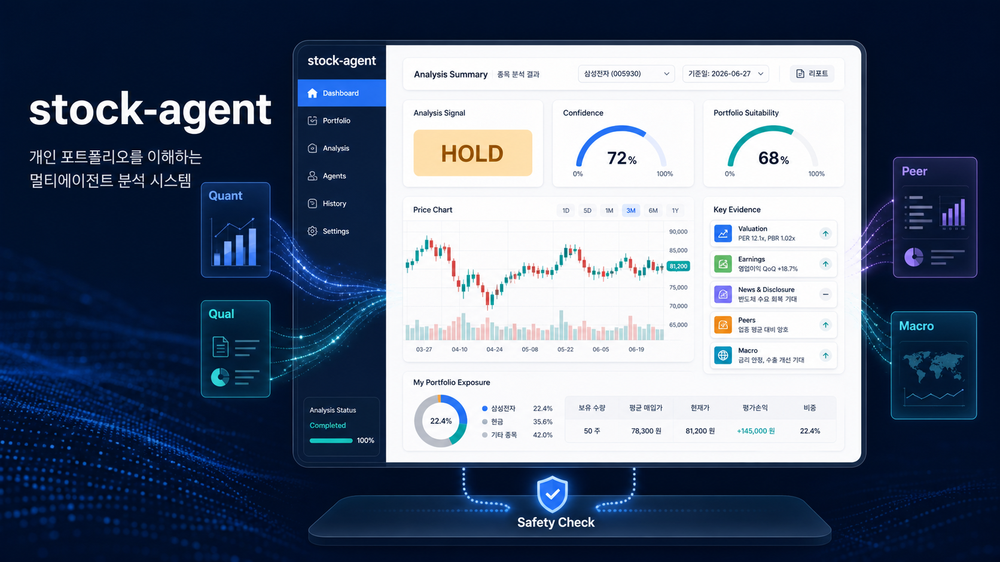
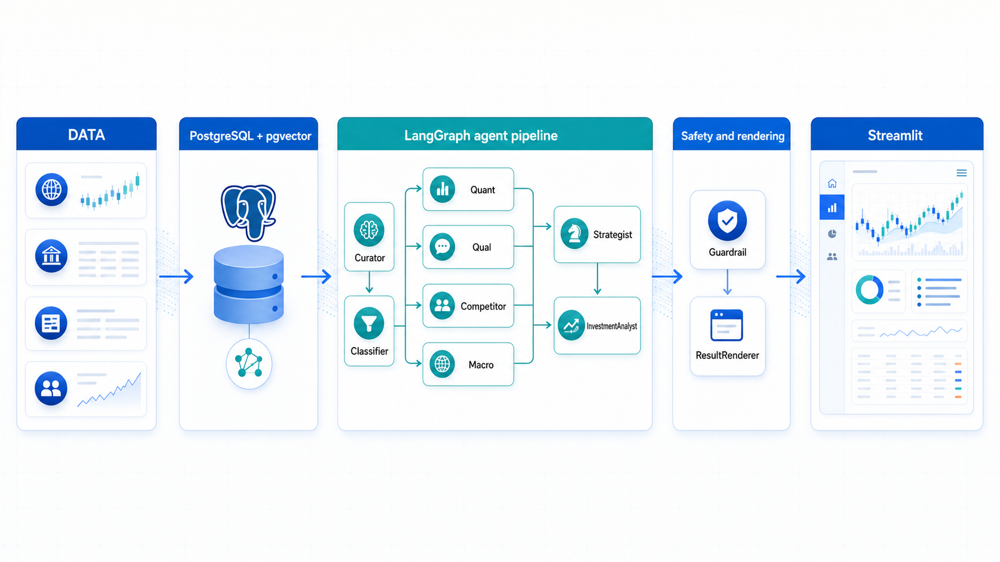
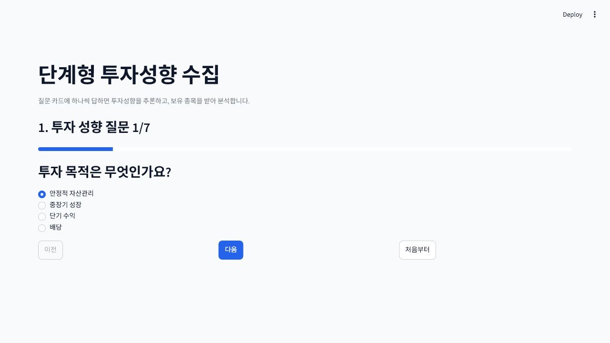
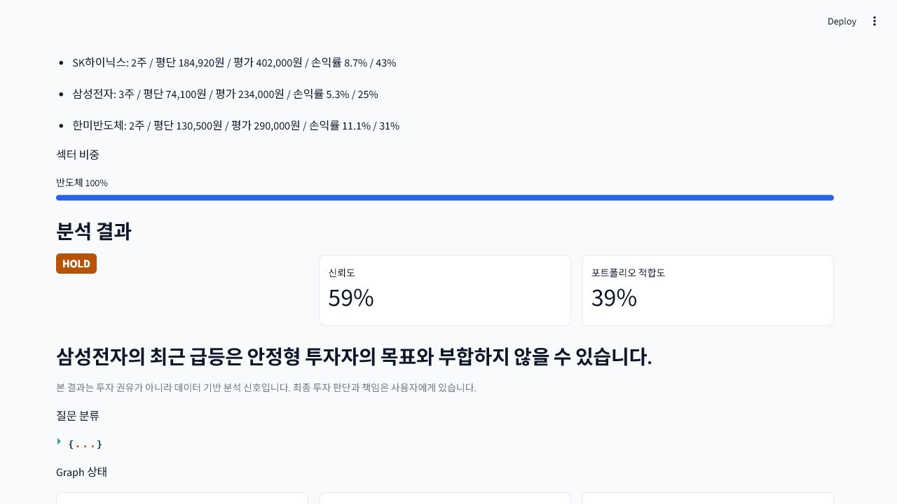

개인투자자의 의사결정을 구조화하는 멀티에이전트 분석 보조 시스템

2025년 말 개인 기준
2026.04.29 금융투자협회
2026년 1~5월 한국거래소
1~3종목 집중투자 비중 59.7%: 포트폴리오 리스크가 개인에게 집중
디지털 금융이해력 59.3점: 모바일 금융 사용은 보편화됐지만 이해도는 부족
개인 평균 수익률 부진: 흩어진 정보가 행동 편향을 줄여주지 못함
| 대안 | 포트폴리오 맥락 | 멀티 관점 | 안전 검증 | 한계 |
|---|---|---|---|---|
| 증권사 MTS | △ | △ | △ | 정보는 많지만 종합 판단은 사용자 몫 |
| 로보어드바이저 | ○ | △ | △ | 자산배분 중심, 개별 종목 근거 설명 약함 |
| 범용 LLM | × | △ | × | 실시간 데이터·출처·환각 통제 한계 |
| stock-agent | ○ | ○ | ○ | 포트폴리오 맥락에서 Agent별 근거를 합성 |
계산과 해석 분리: 정량 수치는 Tool/DB가 만들고 LLM은 설명과 합성에 집중
관점 분리: Quant·Qual·Peer·Macro가 서로 다른 실패 범위와 책임을 가짐
부분 실패 허용: 한 Agent가 실패해도 fallback과 warning으로 분석 흐름 유지
최종 안전 검증: Guardrail이 투자 권유, PII, 근거 부족 표현을 마지막에 점검

사용자 자연어와 포트폴리오를 분석 가능한 종목·섹터·worker_plan으로 구조화하는 앞단 Agent입니다.
사용자 질의·보유 포트폴리오 수신
분석 대상 종목/후보와 섹터 확정
intent·scope·urgency·depth 분류
필요 Agent worker_plan 생성
DART 재무와 pykrx 시세를 기반으로 PER/PBR, 성장률, 수익성, 재무 리스크를 계산합니다.
Curator가 확정한 stock_code/corp_code 수신
시세와 재무제표 Tool 호출
PER/PBR/성장률/부채비율 등 지표 계산
score, valuation_signal, reasons, risks 반환
뉴스 수집 → RAG 임베딩 → Hybrid/RRF → reranker → evidence/risk 생성 흐름입니다.
네이버 금융 종목 뉴스와 공시 문서 적재
raw_news → docs/chunks, bge-m3 벡터화
pgvector 의미 검색 + keyword ts_rank를 RRF로 결합
선택적으로 top-k 후보를 cross-encoder 기준 재정렬
evidence, sentiment, event_type, risk, fallback_reason 생성
대상 종목의 peer를 찾고, 밸류에이션·수익성·성장성·재무 안정성을 비교합니다.
Curator가 확정한 sector와 stock_code 수신
company, stock_price, financial_statement에서 peer 후보 조회
시총 band와 복합 유사도로 비교군 선정
상대 위치 score, warnings, peer_summary 반환
금리, 환율, CPI, GDP, 뉴스심리지수 등 거시 지표를 업종 영향으로 해석합니다.
sector와 as_of_date 기준 macro context 조회
금리·물가·성장·환율·심리 지표를 정규화
업종별 민감도에 따라 score와 risks 계산
portfolio/sector 분석 또는 sector가 있는 단일 종목에서 조건부 실행
Worker 결과를 단순 평균하지 않고, 사용자 보유 비중과 투자성향을 반영해 최종 분석 신호를 만듭니다.
Worker Agent 결과 join
Macro 포함 여부에 따라 가중치 재조정
보유 비중·위험성향·투자기간으로 suitability 보정
sLLM/GLM이 thesis와 risk narrative를 보완
최종 출력 전 PII, 욕설, 수익 보장, 투자 권유성 표현, 근거 부족을 점검하고 Tier 결과로 렌더링합니다.
Strategist 결과를 Guardrail 7게이트로 검사
PII나 금지 표현 발견 시 보수적 HOLD와 마스킹 적용
근거 부족은 recomposer revision loop로 최대 2회 재합성
ResultRenderer가 Tier 1/2/3와 다운로드 산출물 구조화


포트폴리오 맥락: 보유 종목·현금 비중·투자성향을 함께 해석
도구와 LLM 분리: 숫자 계산은 Tool, 설명과 합성은 LLM
Agent별 실패 격리: 부분 실패를 warning과 fallback으로 흡수
검색 근거 중심: 뉴스·공시를 RAG evidence로 변환해 출처 없는 요약을 줄임
금융 안전장치: Guardrail과 재합성 루프로 위험 표현을 완화
B2C: 개인투자자의 보유 종목 점검과 정기 리포트 생성
B2B: 증권·핀테크 앱에 설명형 AI 분석 모듈로 탑재
교육: 투자 판단 과정을 설명하는 실습형 튜터
리서치 보조: 뉴스·공시·peer 요약 자동화
수익화: 프리미엄 리포트, 포트폴리오 모니터링, API 모듈
근거 품질: RAG 인용 스팬, context gating, reranker 운영 기준 고도화
데이터 영속화: users·holdings·analysis_cache 테이블과 이력 관리 필요
커버리지: 실데이터 종목 범위와 뉴스/공시 수집 안정성 확대
제품화: PB 리포트 PDF/Excel, 알림, 운영 비용 제어 필요